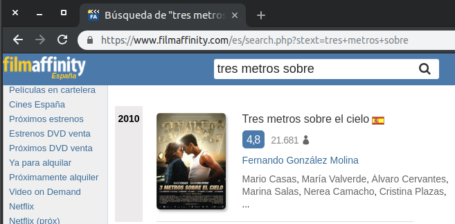
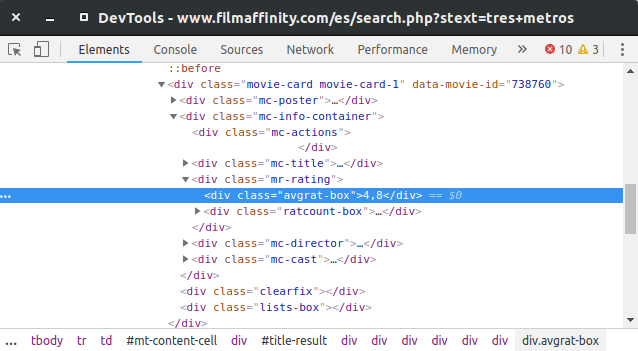

Web Scraping
Robando información a lo JIBIRI
¿Qué me estas contando máquina?
Imagina que vamos a crear un bot que nos devuelva la nota media de una película en FilmAffinity
FilmAffinity no tiene API pública
¡Vamos a ello!
-
Extraer información
requests, urllib2, etc... - Selenium, scrapy
-
Procesar información
BeautifulSoup - Selenium, scrapy
Picando código
La url de busqueda es https://www.filmaffinity.com/es/search.php?stext=tres+metros+sobre

Identificamos la información
Abrimos con el inspector de elementos del navegador y buscamos la información que necesitamos

Sacamos información
La url de busqueda es https://www.filmaffinity.com/es/search.php?stext=tres+metros+sobre
import requests from bs4 import BeautifulSoup # Obtenemos información response = requests.get('https://www.filmaffinity.com/es/search.php?stext=tres+metros') # Procesamos información soup = BeautifulSoup(response.content) rating_div = soup.find("div", {"class": "avgrat-box"}) rating_div.get_text() '4,8'
A tener en cuenta...
-
No vale reinventar la rueda
Antes de ponerte a picar código, busca si ese servicio tiene una API púbica disponible u otras librerías que te proporcionen esa información
-
Los servidores te paran los pies
Cuando haces muchas consultas seguidas los servidores webs te paran los pies